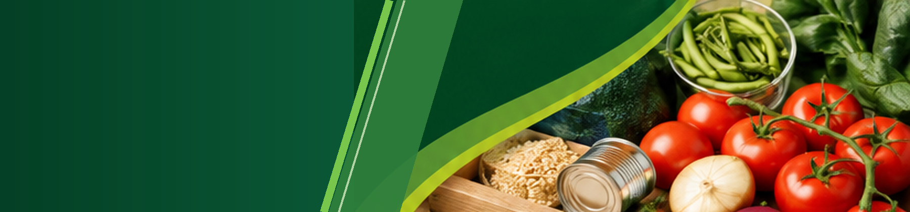
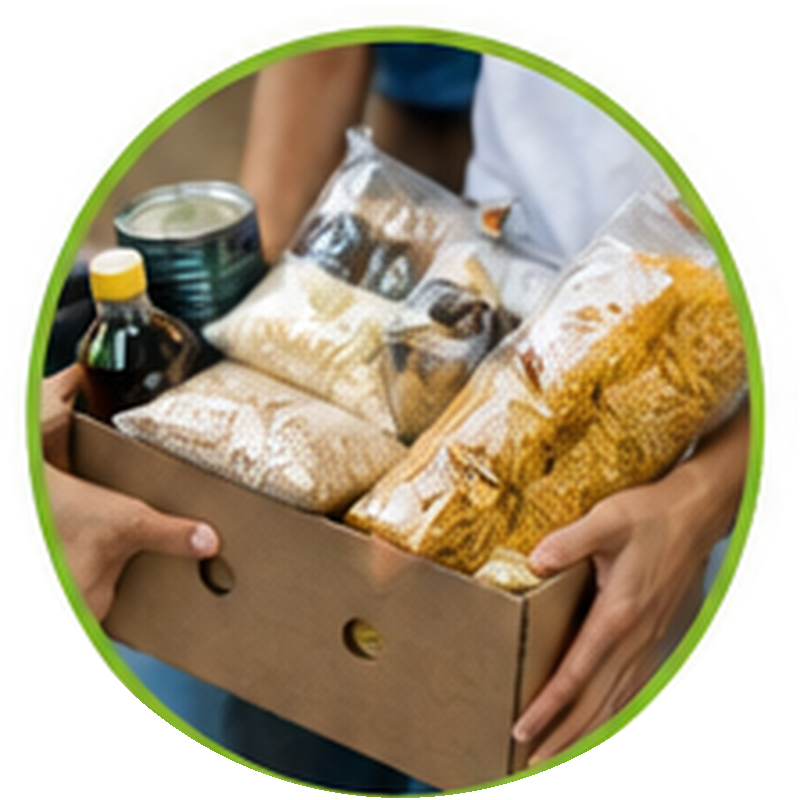
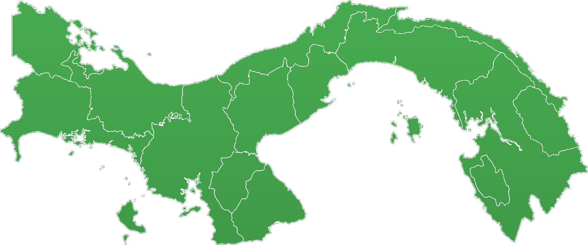
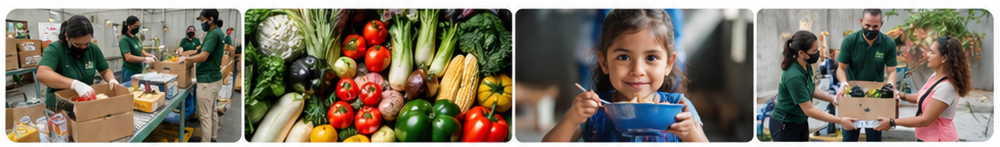

KG RESCATADOS
{{ kilos_share|default(0) }}%
{{ kilos_donated|default('0') }}
KILOGRAMOS
en el mes


Estimado donante, mediante este reporte queremos darle visibilidad sobre el impacto que hemos logrado, apalancados en los alimentos rescatados recibidos de su organización durante este mes.
| MES | {% for month in month_labels %}{{ month }} | {% endfor %}RESUMEN |
|---|---|---|
| Kilos totales entregados (kg) | {% for value in monthly_data.kilos %}{{ value }} | {% endfor %}{{ monthly_data.kilos_total|default('0') }}Total |
| Organizaciones beneficiarias | {% for value in monthly_data.organizations %}{{ value }} | {% endfor %}{{ monthly_data.organizations_average|default('0') }}Promedio mensual |
| Población alcanzada | {% for value in monthly_data.population %}{{ value }} | {% endfor %}{{ monthly_data.population_average|default('0') }}Promedio mensual |
Promedios calculados únicamente con los meses que contienen datos reportados.

{% for point in map_points %}